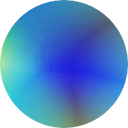

サイバー環状線
@CyberKanjousen
@Liearmer 「这些人」的指代不是很清楚，可能会出现歧义……
如果「参团」指的是「参与二游节奏相关话题的讨论」的话，環状線或许会参与；如果「参团」指加入某圈子并参与圈子间的冲突中，那么，環状線说，環状線不会加入任意一方的圈子中，也不会偏向于任何群体。

Earmer Carey
@Liearmer
@CyberKanjousen 变成：「米哈游的极端玩家」简称「这些人」可能更好一点？
或许是我太过敏感了，「米卫兵」已经快成了某种专有名词了，攻击范围有些广。
不过环状线确定要参团吗？这个话题的风险确实很高。